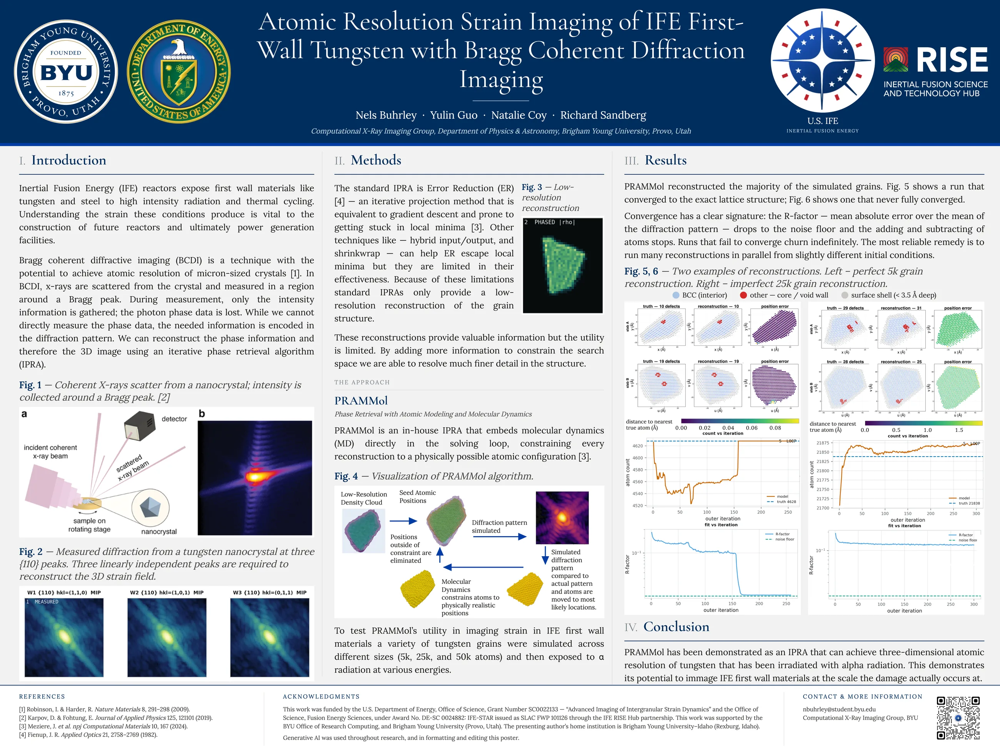
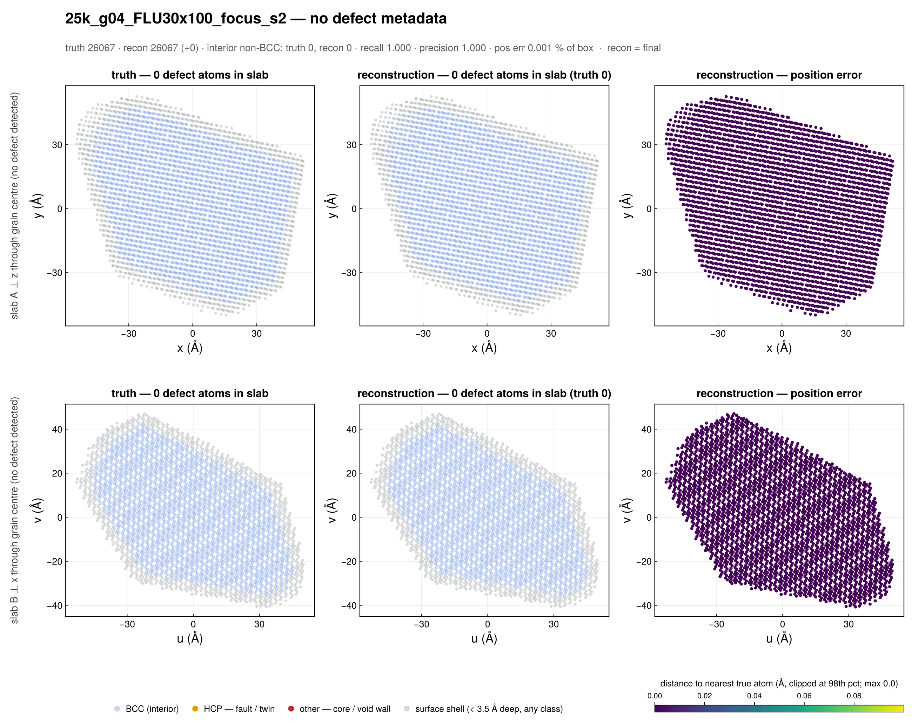
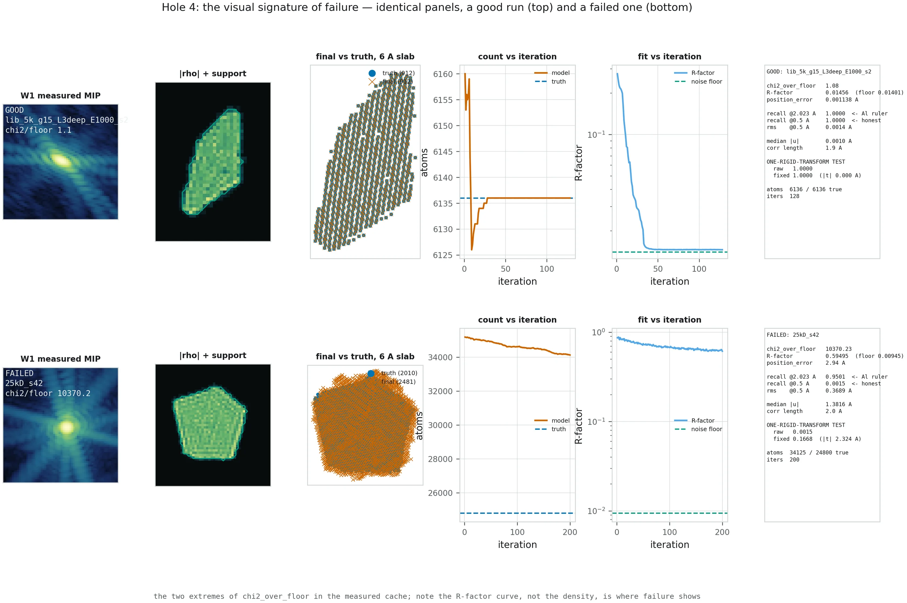
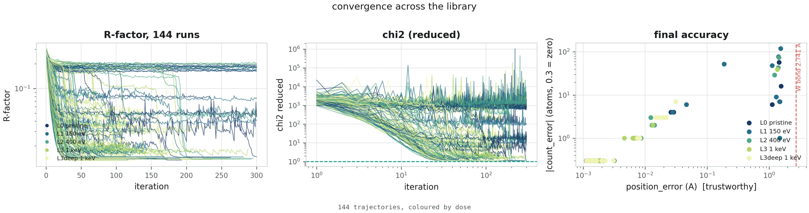
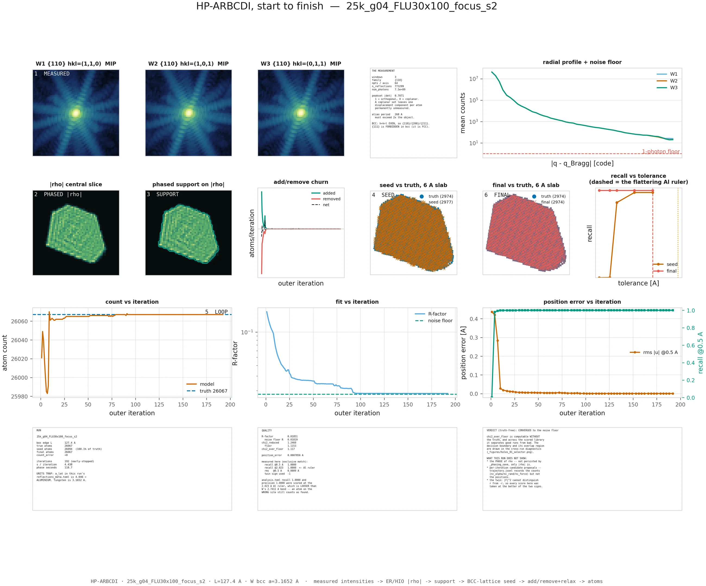
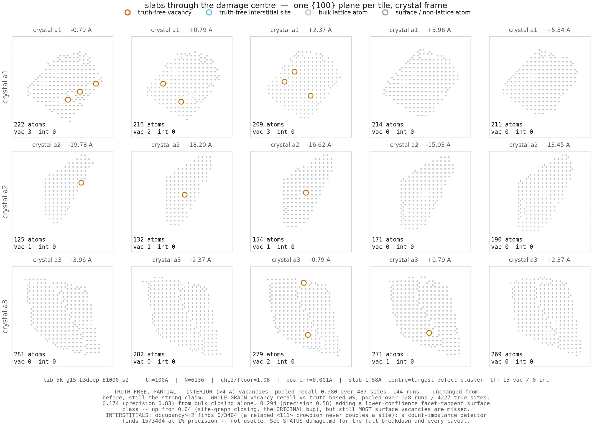
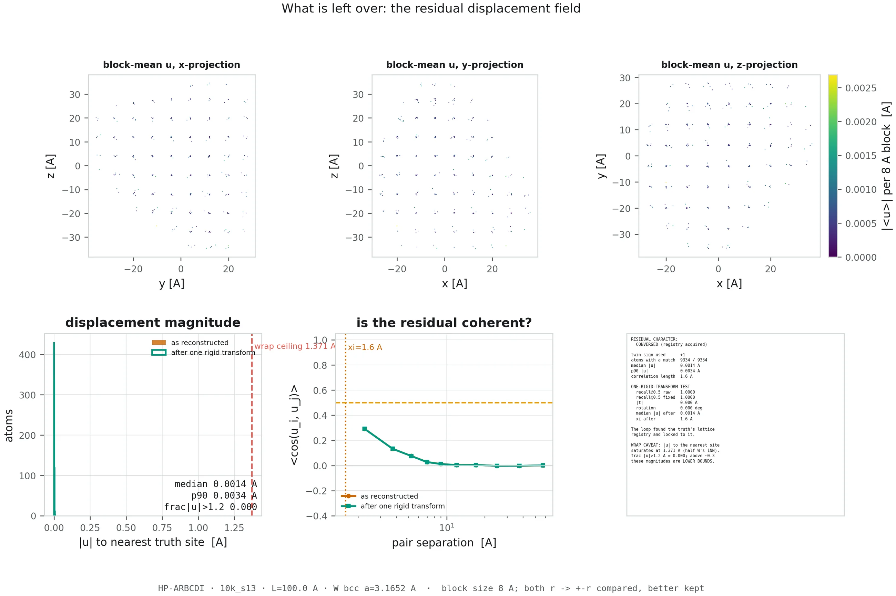
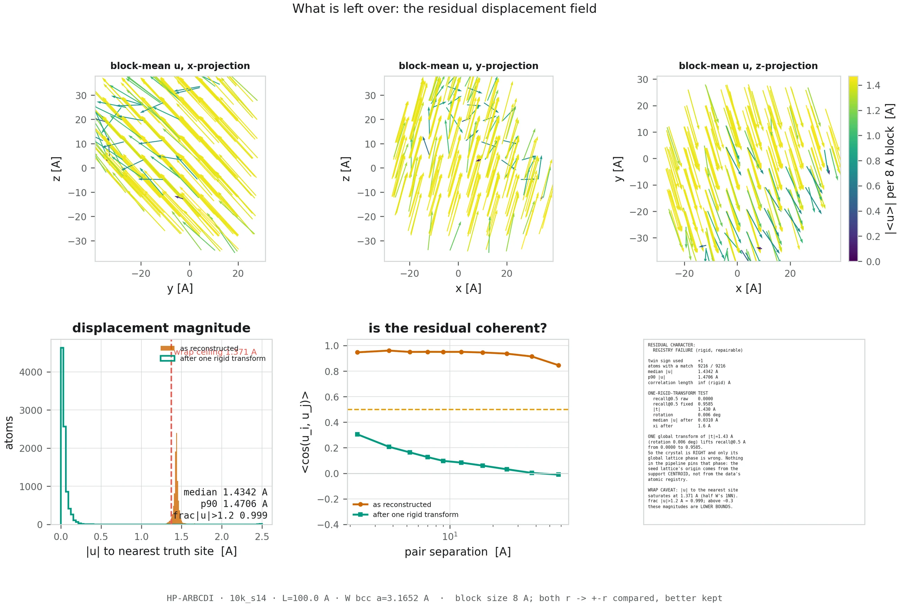
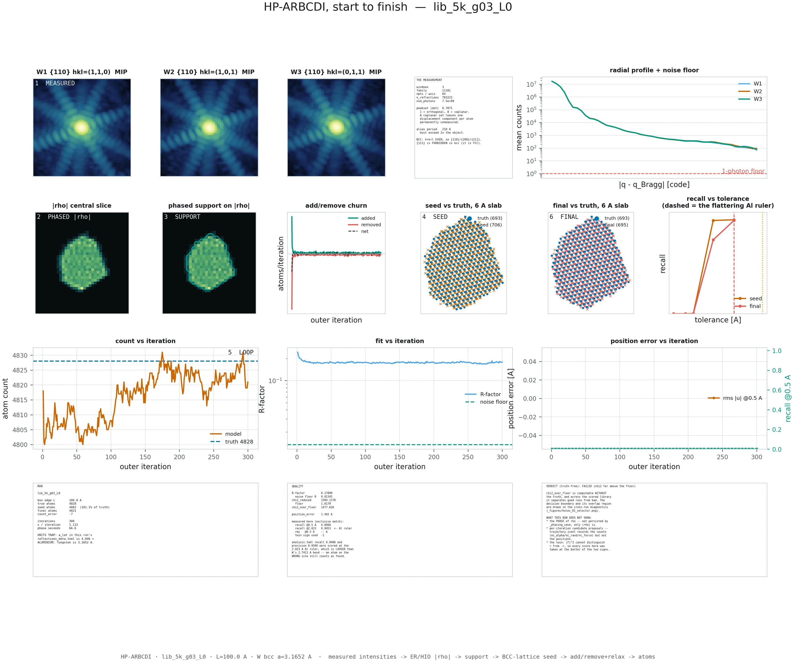
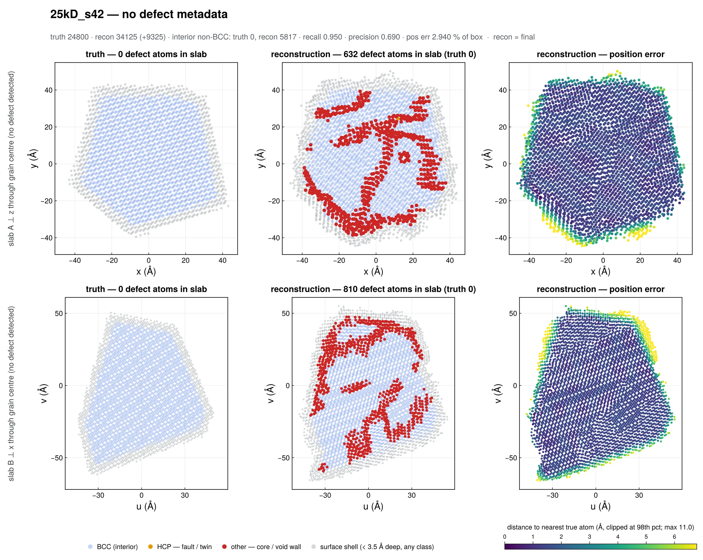

I.What this is
Inertial Fusion Energy reactors expose first-wall materials like tungsten to intense radiation and thermal cycling. The damage that matters happens atom by atom — a vacancy here, an interstitial there — so measuring it means imaging at that scale.
We simulate irradiated tungsten nanograins, compute the X-ray diffraction they would produce, and then hand a solver only those intensities and ask it to put the atoms back. The truth is never shown to the solver; it is used afterwards, to grade. This page shows what that looks like — the reconstructions running, and how often they succeed.

II.Watch it reconstruct
Every run is recorded two ways, and they answer different questions.
| View | What you see |
|---|---|
| a‑CNA view | The atoms themselves, rotating, coloured by adaptive common-neighbour analysis — which classifies each atom from the geometry of its neighbours. Blue is ordinary BCC lattice; amber is an interior atom whose coordination is not BCC (a defect core, a void wall, a fault); open rings are the true atom sites. Amber is the damage. |
| Dashboard | The whole solve at once: atom cloud, predicted-versus-true slices in three planes, predicted-versus-true diffraction, and four live curves. Watch this one for convergence — the two diffraction panels close on each other as the error curves fall. |
The same crystal, twice — one works, one does not
These two runs got the same 9,334-atom grain, the same three Bragg peaks and the same photon budget. They differ only in a random seed, which makes them two independent repeats of one experiment. The first found every atom to 0.0017 Å. The second never found a single one.
10k_s13. Watch the readout: once it reads +0 vs 9334 true the
cloud stops changing. The run ended itself early.
10k_s14. It looks just as busy and just as crystalline, and its R-factor
readout barely moves off 0.23. The visual difference is far smaller than the
1,000× difference in fit.
26,067 atoms, recovered exactly
The best result in the archive: a helium-irradiated grain — 30 ions at 100 eV driven into one 6 Å spot to build a bubble — reconstructed with a count error of zero and a mean position error of 0.0008 Å, about one three-thousandth of a tungsten bond.
25k_g04_FLU30x100_focus_s2. The amber region is the helium bubble damage
— found from diffraction intensities alone.
A 1,000 eV cascade, seen atom by atom
The a-CNA view earning its keep. This grain took a 1,000 eV primary knock-on atom deep into its interior — the most violent cascade in the 5,000-atom library — and it is also the tightest fit in the whole archive at χ²/floor 1.08. Heavily damaged grains reconstruct better than clean ones, which is not what anyone expected; §III explains why.
lib_5k_g15_L3deep_E1000_s2, 6,136 atoms, all of them found.

And a runaway
The worst run in the archive, and the most instructive. Given a 24,800-atom truth at 4.6× the usual photon dose, it produced 34,125 atoms — inventing 9,325 — and ended with an R-factor 63× its noise floor. More photons did not help: this is a search failure, not a data problem.
25kD_s42. The atom count in the readout stays thousands above truth for the
entire run while the model keeps rearranging itself. This is what “churns
indefinitely” looks like.
III.Convergence
Three things happen at once when a reconstruction succeeds, and the simultaneity is the point. The R-factor reaches the measurement's own noise floor — the residual the true structure would leave, set by photon shot noise. The atom count locks, because adding or removing any atom now makes the fit worse. And the add/remove churn goes to zero, so the run ends itself instead of exhausting its iteration budget.
A failed run has none of the three. It flattens above the floor, stalls short or drifts past
the true count, and churns to the cap. The single number that captures it is
χ²/floor: this run's fit divided by the fit the truth itself achieves.
Near 1 means everything but the shot noise is explained. The archive spans 1.08 to 10,370.

How often it works
| Grain | Runs | Converged | Partial | Failed | Converged |
|---|---|---|---|---|---|
| ~5,000 atoms | 207 | 146 | 30 | 31 | 70.5 % |
| ~9,300 atoms | 12 | 3 | 0 | 9 | 25.0 % |
| ~22,000–26,000 | 212 | 14 | 53 | 145 | 6.6 % |
| ~50,000 atoms | 82 | 0 | 79 | 3 | 0.0 % |
| All | 513 | 163 | 162 | 188 | 31.8 % |
This is a success rate per attempt, not a capability limit — when a run lands, it lands exactly. Success falls with size because unknowns grow as three coordinates per atom while usefully-measured intensity does not, and every run here used three Bragg peaks, the bare minimum that can constrain a 3D displacement field. Large grains want more peaks, not more iterations. The 50,000-atom row is unfinished work rather than a wall: 79 of its 82 runs are still improving.
It is not the radiation damage
The obvious guess is that damaged grains are harder, since defects are exactly what the ideal starting lattice lacks. Across the 144-run 5,000-atom library the trend runs the other way: pristine controls converge 62.5 % of the time, 150 eV cascades 65.6 %, 400 eV 78.1 %, and 1,000 eV 87.5 % — with not one outright failure among the 32 deep-cascade runs. The pristine control is the hardest case in the table.
Because the failure is a registry problem. A perfect crystal looks identical after sliding it by one lattice site, so nothing in the data prefers one alignment and the solver can settle into the wrong one. Put a recognisable cascade in the middle and that degeneracy is gone — exactly one alignment now explains the measurement.
Grain shape matters more than dose. At 22,000–26,000 atoms, one grain converged in 5 of 9 attempts, another in 5 of 19, another in 4 of 48, and another in 0 of 25 — same code, same damage recipes, same peaks.
There is almost no partial credit
Accuracy is not spread smoothly from good to bad. Of all 513 runs, 214 land below 0.05 Å and 273 land at or above 0.5 Å — and only 26 (5.1 %) fall in between. In the tightly controlled 5,000-atom library the gap is starker: 129 below, 14 above, and exactly one in the middle.
Continuous error sources produce continuous degradation. A gap that clean means something discrete decides the outcome: the model latches onto the right lattice registry or a wrong one, with no stable state part-way between two sites. That is good news — a discrete failure is one you can detect and retry, not an accuracy limit you live with.

Picking the good run without knowing the answer
Eight independent repeats were run on one 9,334-atom grain — identical truth, identical measurement recipe, one differing random seed, which sets both the shot-noise draw and the subset of voxels the solver fits. Three converged; five did not.
| Run | χ²/floor | Position error | Outcome |
|---|---|---|---|
10k_s22 | 1.15 | 0.0017 Å | converged |
10k_s13 | 1.16 | 0.0017 Å | converged |
10k_s21 | 1.53 | 0.0035 Å | converged |
10k_s15 | 151 | 0.2219 Å | failed |
10k_tpd035_s3 | 275 | 0.5220 Å | failed |
10k_s11 | 938 | 0.7301 Å | failed |
10k_s19 | 1046 | 1.3750 Å | failed |
10k_s14 | 1204 | 1.4187 Å | failed |
χ²/floor separates those eight cleanly — 1.15, 1.16, 1.53 against 151, 275, 938, 1046, 1204 — and it requires no truth, because the noise floor follows from photon statistics rather than from the sample. So at a real beamline you launch several reconstructions, keep the lowest χ²/floor, and discard the rest without ever knowing the answer.
Measured across the archive: picking blind gives mean recall 0.9065 with 8.6 % of runs broken; keeping the lower χ²/floor gives 0.9548 with 4.7 % broken; an all-knowing oracle gives 0.9552 with 4.7 %. The truth-free rule captures 99.3 % of what perfect knowledge would buy, and roughly halves the broken-run rate. That is the whole case for running reconstructions in parallel.
The archived recall figures use a 2.023 Å matching tolerance — half of aluminium's lattice parameter, inherited from a metadata default — while a tungsten bond is 2.7411 Å. At 74 % of a bond it is wider than the registry offset it should be catching, so an atom on the wrong lattice site still scores as found. Every one of the 50 failed runs in the measurement cache scores above 0.90 on it; 30 score below 0.01 at an honest 0.5 Å. Both numbers are printed side by side throughout. The full accounting →
IV.Going deeper
The two distinct failure modes — a correct crystal in the wrong place, versus a genuinely warped one — why a stuck run cannot stop itself, and what would fix it.
How BCDI works →The phase problem, why a Bragg peak encodes strain, why three peaks are the minimum, the twin ambiguity, and what molecular dynamics adds to the loop.
How to read the figures →A panel-by-panel guide to the diagnostic sheets, including which single panel decides whether a run worked.
The eight runs shown above, and every figure for each
| Run | Atoms | Count err | Pos. error | χ²/floor | Note |
|---|---|---|---|---|---|
he/25k/…g04_FLU30x100_focus_s2 | 26,067 | 0 | 0.0008 Å | 1.12 | largest exact recovery |
lib_5k_g15_L3deep_E1000_s2 | 6,136 | 0 | 0.0011 Å | 1.08 | tightest fit; heaviest damage |
10k_s13 | 9,334 | 0 | 0.0017 Å | 1.16 | converged half of the seed pair |
large/lgE_25k_g01_L1_E150_s2 | 21,843 | 0 | 0.0027 Å | 2.18 | a hard grain that landed |
he/25k/25k_g01_E3200x3_spread_s1 | 21,845 | −106 | 1.3789 Å | 1074 | representative 25k stall |
lib_5k_g03_L0 | 4,828 | −7 | 1.4821 Å | 1478 | undamaged, and still failed |
10k_s14 | 9,334 | −118 | 1.4187 Å | 1204 | failed half of the seed pair |
25kD_s42 | 24,800 | +9,325 | 2.9405 Å | 10,370 | runaway; 34,125 atoms produced |
Open the full diagnostic figure set for these eight runs
Each run's nine-panel summary sheet shows the whole pipeline on one page; the
others break out individual stages. What the panels
mean → Support-oversizing figures are deliberately not published.
he/25k/25k_g04_FLU30x100_focus_s2 — converged, 26,067 atoms
summary · convergence · measurement · phasing · seed · residual field · atom slabs
{kind=link}
{kind=link}
{kind=link}
{kind=link}
{kind=link}
{kind=link}
{kind=link}

lib_5k_g15_L3deep_E1000_s2 — converged, tightest fit in the archive
summary · convergence · measurement · phasing · seed · residual field · cascade damage
{kind=link}
{kind=link}
{kind=link}
{kind=link}
{kind=link}
{kind=link}
{kind=link}

10k_s13 vs 10k_s14 — the seed pair
Converged: summary ·
convergence ·
measurement ·
phasing ·
seed ·
residual field ·
atom slabs
Failed: summary ·
convergence ·
measurement ·
phasing ·
seed ·
residual field ·
atom slabs
{kind=link}
{kind=link}
{kind=link}
{kind=link}
{kind=link}
{kind=link}
{kind=link}
{kind=link}
{kind=link}
{kind=link}
{kind=link}
{kind=link}
{kind=link}
{kind=link}


large/lgE_25k_g01_L1_E150_s2 — converged on a hard grain
summary · convergence · measurement · phasing · seed · residual field
{kind=link}
{kind=link}
{kind=link}
{kind=link}
{kind=link}
{kind=link}
he/25k/25k_g01_E3200x3_spread_s1 — a representative 25k stall
summary · convergence · measurement · phasing · seed · residual field
{kind=link}
{kind=link}
{kind=link}
{kind=link}
{kind=link}
{kind=link}
lib_5k_g03_L0 — undamaged, and still failed
summary · convergence · measurement · phasing · seed · residual field
{kind=link}
{kind=link}
{kind=link}
{kind=link}
{kind=link}
{kind=link}

25kD_s42 — the runaway
summary · convergence · measurement · phasing · seed · residual field · atom slabs
{kind=link}
{kind=link}
{kind=link}
{kind=link}
{kind=link}
{kind=link}
{kind=link}

Acknowledgments
This work was supported by:
- The U.S. Department of Energy, Office of Science, Grant Number SC0022133 — “Advanced Imaging of Intergranular Strain Dynamics”
- The Office of Science, Fusion Energy Sciences, under Award No. DE-SC0024882: IFE-STAR issued as SLAC FWP 101126 through the IFE RISE Hub partnership
- The BYU Office of Research Computing
- Brigham Young University (Provo, Utah)
The presenting author’s home institution is Brigham Young University–Idaho (Rexburg, Idaho).